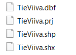
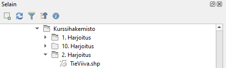
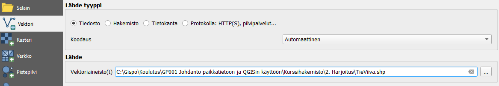
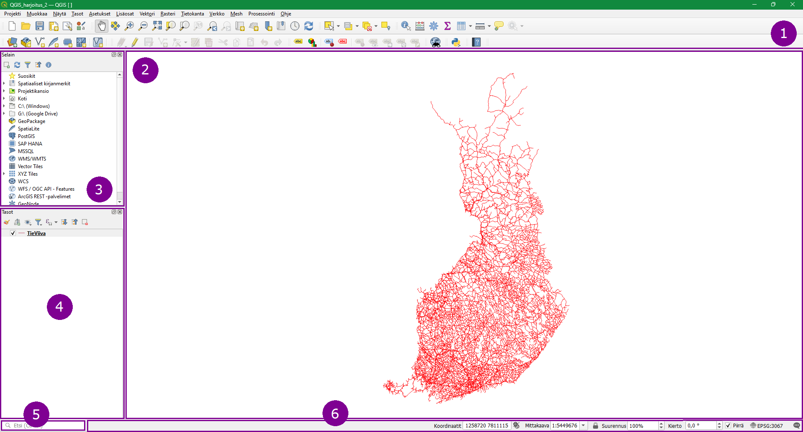
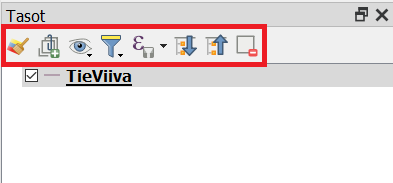
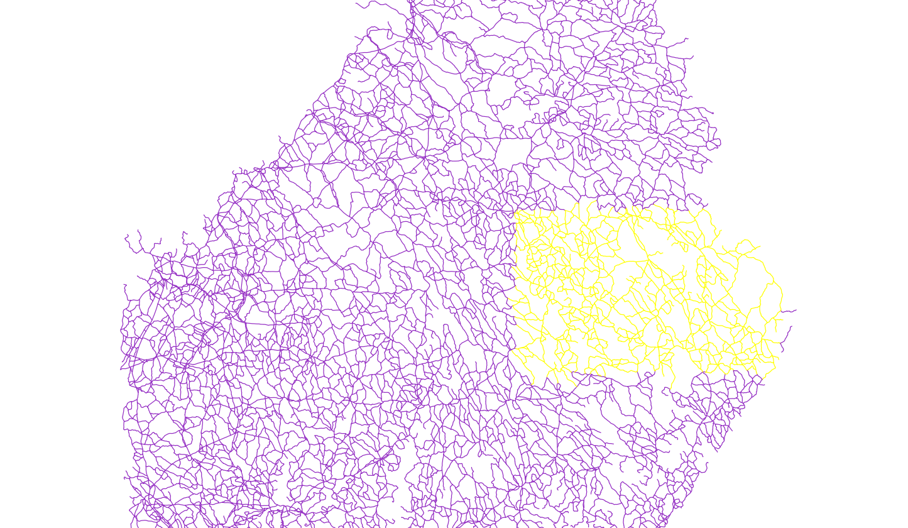

Harjoitus 2: Paikkatietoaineistot ja QGISin käyttöliittymä
Harjoituksen sisältö
Harjoituksessa tutustutaan eri paikkatietoaineistoihin käyttäen resurssienhallintaa, avataan ensimmäinen paikkatietoaineisto ja tutustutaan QGISin käyttöliittymän perustoiminnallisuuksiin.
Harjoituksen tavoite
Harjoituksen jälkeen koulutettava tuntee paikkatietoaineistojen perusominaisuudet, osaa tarkastella vektoriaineiston geometriaa ja ominaisuustietoja QGISissä sekä valita ja suodattaa aineistoa.
Arvioitu kesto
30 minuuttia.
Valmistautuminen Avaa uusi QGIS-projekti (Projekti > Uusi) ja tallenna se nimellä “QGIS-harjoitus 2”.
Paikkatietoaineiston tiedostot
QGISin käyttöliittymä saattaa aueta englanninkielisenä ensimmäisellä käyttökerralla, mutta voit vaihtaa kielen suomeksi valitsemalla QGISin ylävalikosta Settings > Options ja tämän jälkeen General > User interface translation > suomi. Paina lopuksi OK.

Jotta juuri tekemäsi muutos tulee voimaan, sinun tulee käynnistää QGIS uudelleen.
Mene seuraavaksi tietokoneesi resurssienhallinnan kautta kurssihakemistoon. Avaa sieltä kansio ../2. Harjoitus/ ja tarkastele tiedostoja. Voit huomata, että kansiosta löytyy useita samannimisiä tiedostoja, mutta tiedostopääte on eri. Tarkastele esimerkiksi TieViiva-tiedostoja.

Nämä samannimiset TieViiva-tiedostot muodostavat yhden kokonaisen paikkatietoaineiston. Tässä tapauksessa aineiston tiedostomuoto on ESRI shapefile (.shp), jossa paikkatietoaineistolle tarpeelliset komponentit on tallennettu eri tiedostoihin.
Shp-muotoisen paikkatietoaineistotiedoston tärkeimmät tiedostot ovat:
| Formaatti | Sisältö |
|---|---|
| .shp | Aineiston geometriatiedot |
| .prj | Käytetyn koordinaattijärjestelmän määritelmä |
| .dbf | Paikkatiedon ominaisuustietotaulu (attribuuttitaulu) |
Muita mahdollisia aputiedostoja shp-tiedostolle ovat:
| Formaatti | Sisältö |
|---|---|
| .shx | Geometriatietojen indeksi |
| .sbn/sbx | Spatiaalinen indeksi |
| .cpg | Kirjainmerkistön koodi |
Tarkastele seuraavaksi 2. Harjoitus- kansiota Selain-paneelissa (löytyy ylhäältä vasemmalta tai, jos se ei ole näkyvillä, klikkaa yläpalkin harmaalla alueella hiiren oikeaa ja valitse Selain-paneeli). Huomaa, että paikkatietoaineistoja on nyt helpompi havainnoida, kun aputiedostoja ei näytetä.

QGIS tunnistaa erilaiset paikkatietoaineistoformaatit (ja niihin sisältyvät aputiedostot) automaattisesti ja piilottavat aputiedostot tulkinnan helpottamiseksi.
QGISin käyttöliittymä
Lisää nyt TieViiva-paikkatietoaineisto QGIS-projektiisi joko
tuplaklikkaamalla aineistoa Selain-paneelissa tai valitsemalla Avaa
tietolähteiden hallinta  . Sama
toiminto löytyy myös QGISin ylävalikon kohdasta Tasot > Lisää taso >
Lisää vektoritaso… . Valitse avautuvasta Tietolähteiden hallinta
-ikkunasta Vektori-välilehti ja lisää TieViiva-aineisto
kurssihakemistostasi (../kurssihakemisto/2. Harjoitus). Muista
valita oikea tiedostomuoto! Paina lopuksi Lisää ja sulje ikkuna.
. Sama
toiminto löytyy myös QGISin ylävalikon kohdasta Tasot > Lisää taso >
Lisää vektoritaso… . Valitse avautuvasta Tietolähteiden hallinta
-ikkunasta Vektori-välilehti ja lisää TieViiva-aineisto
kurssihakemistostasi (../kurssihakemisto/2. Harjoitus). Muista
valita oikea tiedostomuoto! Paina lopuksi Lisää ja sulje ikkuna.

QGISin karttaikkunassa pitäisi nyt näkyä Maanmittauslaitoksen vektorimuotoinen tieaineisto. Viivan väri saattaa vaihdella, sillä kuvaustekniikka ei ole kiinteä osa paikkatietoaineistoa – QGIS luo satunnaisen värityksen aineistolle kunnes sille luodaan erillinen kuvaustekniikka.

1. Työkalupalkit Työkalupalkit sisältävät nimensä mukaisesti erilaisia työkaluja. QGIS-työtilassasi saattaa olla näkyvissä enemmän tai vähemmän työkalupalkkeja, kuin yllä olevassa kuvankaappauksessa. Napauttamalla hiiren oikea näppäintä työkalupalkkien päällä, voit piilottaa tai ottaa esiin työkalupalkkeja. Voit myös raahata työkalupalkkeja eri kohtiin.
2. Karttaikkuna Karttaikkunaan piirtyvät ne paikkatietoaineistot, jotka ovat tasoluettelossa aktivoituna näkyväksi. Voit lähentää ja loitontaa karttaa sekä paneroida siinä hiiren avulla (koita myös hiiren scrollia).
3. Selain-paneeli Tutustuimmekin jo hieman QGISin Selain-paneeliin. Tästä paneelista löydät erilaisia kansiopolkuja.
4. Tasoluettelo Tähän osioon tulevat näkyviin paikkatietoaineistot, jotka näkyvät karttaikkunassa. Voit hallita tasojen järjestystä ja näkyvyyttä.
5. Hakutoiminto QGISin hakutoiminnolla löydät kätevästi esimerkiksi työkalujen ja toimintojen sijainnit.
6. Tilapalkki Tilapalkista löydät hiiren kursorin koordinaatit (joko metreinä tai leveys- ja pituusasteina), mittakaavan, suurennuksen, kierron, projektin koordinaattijärjestelmän sekä QGISin lokiviestit. Tilapalkista pääset nopeasti muuttamaan mm. projektin koordinaattijärjestelmää.
Kokeile itse
Kokeile nyt vapaasti QGIS-työkaluja. Tarkastele ainakin Karttanavigoinnin työkalupalkkien sekä Ominaisuustietojen työkalupalkkien toiminnallisuuksia:

Paikanna edellä näkyneestä työkalurivistä seuraavat työkalut ja tunnista niiden tarkoitukset:
| Zoomaa täydeksi |  |
| Zoomaa tasoon |  |
| Näytä kohteen tiedot |  |
| Avaa attribuuttitaulu |  |
| Mittaa viivan pituus |  |
Kokeile myös tilapalkin ja tasoluettelon toimintoja.

Paikkatietoaineiston kohteiden valinta
Kokeile työkalua Valitse kohteet  .
Klikkaa työkalu aktiiviseksi ja piirrä kartalle suorakaide. Kaikki
Tieviiva-tason elementit, jotka osuvat edes osittain valintarajauksesi
sisään, korostuvat keltaisella.
.
Klikkaa työkalu aktiiviseksi ja piirrä kartalle suorakaide. Kaikki
Tieviiva-tason elementit, jotka osuvat edes osittain valintarajauksesi
sisään, korostuvat keltaisella.

Avaa nyt tason attribuuttitaulu joko
 -painikkeella tai klikkaamalla
tasoluettelossa tasoa hiiren oikealla napilla ja valitsemalla Avaa
attribuuttitaulu. Kaikki ne tie-elementit, jotka tulivat kartalta
valituksi, ovat korostuneet taulussa sinisellä. Voit suodattaa
attribuuttitaulun näkymää sen vasemmasta alanurkasta ja näyttää vain
valitut kohteet:
-painikkeella tai klikkaamalla
tasoluettelossa tasoa hiiren oikealla napilla ja valitsemalla Avaa
attribuuttitaulu. Kaikki ne tie-elementit, jotka tulivat kartalta
valituksi, ovat korostuneet taulussa sinisellä. Voit suodattaa
attribuuttitaulun näkymää sen vasemmasta alanurkasta ja näyttää vain
valitut kohteet:

Poista aineiston valinta klikkaamalla Poista valinnat kaikilta
tasoilta -painiketta  , joka löytyy
attribuuttitaulun työkalupalkista.
, joka löytyy
attribuuttitaulun työkalupalkista.
Paikkatietoaineiston kohteiden suodatus
Suuria aineistoja käsiteltäessä on joskus hyödyllistä suodattaa karttaikkunassa näkyvän aineiston määrää – tämä voidaan tehdä suodattamalla aineistoa sen ominaisuustietojen perusteella. Klikkaa hiiren oikealla painikkeella TieViiva-tasoa ja valitse Suodata…

QGISiin aukeaa Kyselyn muodostaja -ikkuna, jossa voit muodostaa erilaisia suodatuslausekkeita. Kaikki kohteet, jotka täyttävät lausekkeen ehdon, jäävät näkyviin kartalle – muut kohteet suodattuvat pois. Tietokentät-kohdassa listataan käytettävissä olevat ominaisuustiedot (kentät/sarakkeet). Tuplaklikkaamalla riviä se siirtyy Suodattimena käytettävä lauseke -kenttään. Kentän arvoja voit etsiä oikealta Otos- tai Kaikki-painikkeella. Suodatetaan nyt aineistoa niin, että vain tieluokan 1 tieviivat jäävät näkyviin.

Jos suodatinlausekkeesi on muodostettu oikein, klikkaa OK-painiketta. Nyt suurin osa tieviivoista katoaa kartalta ja attribuuttitaulukin näyttää vain lausekkeen läpäisevät kohteet. Alkuperäinen koneellesi tallennettu aineisto on edelleen kokonainen: QGIS vain suodattaa, mitä osia näet siitä.
Suodatusehtoina voit käyttää esim. suurempi kuin -, pienempi tai yhtä
suuri kuin -, tai erisuuri kuin -operaattoreita. Voit myös yhdistellä
eri kenttien ehtoja AND- ja OR-operaattoreilla. Muistutuksena siitä,
että aineistoa on suodatettu, tasoluettelossa näkyy pieni suppilokuvake
 . Tätä kuvaketta klikkaamalla voit
milloin tahansa palata suodatinlausekkeeseen, muokata sitä tai poistaa
sen.
. Tätä kuvaketta klikkaamalla voit
milloin tahansa palata suodatinlausekkeeseen, muokata sitä tai poistaa
sen.

Kokeile vielä toista suodatusehtoa: poista edellinen ehto ja anna uudeksi ehdoksi “Tienumeron on oltava pienempi kuin 100”. Huomaat, että myös numeroimattomat pikkutiet tulevat mukaan suodatukseen, koska niiden tienumero on 0. Millä ehdoilla saat nämä numeroimattomat tiet pois näkymästä?
Kun olet valmis, tallenna projektitiedosto kurssihakemistoon pikakomennolla CTRL + T (englanninkielisellä QGISillä CTRL + S) tai päävalikosta Projekti > Tallenna.
Psst! Koulutuksen jälkeen saat henkilökohtaista tukea Gispon tukipalvelusta. Lähetä kysymyksesi tai kommenttisi osoitteeseen koulutustuki@gispo.fi !